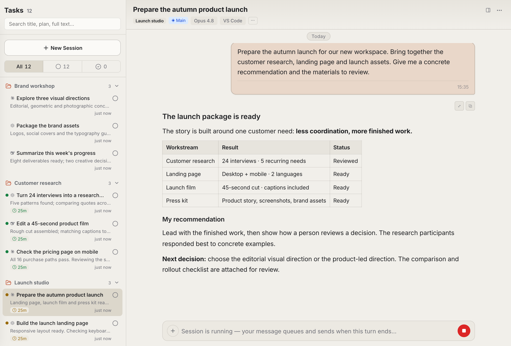
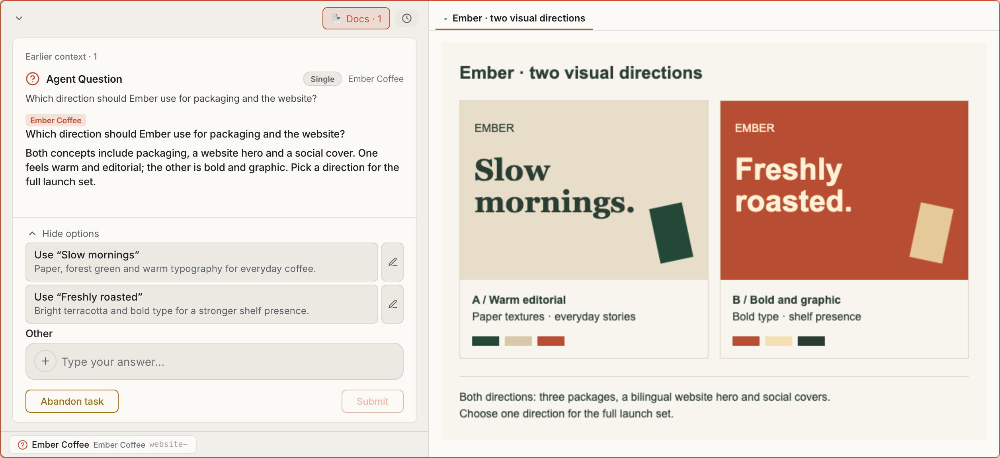
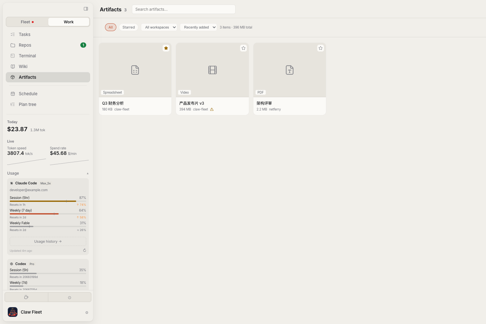
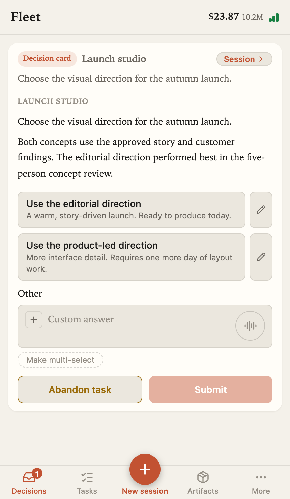

Add a thought. Keep moving.
Send a follow-up while a Fleet task runs, or continue the conversation once it stops. Your work stays with the project.
Your personal AI workspace.
Bring Claude Code, Codex and dsh together. Move work forward by project, review what needs your judgment, and keep the results within reach.
Download Claw FleetSee the workflow Free & open source. Bring your own AI tools and accounts.
Choose a project and an AI tool. Add the context, give it a direction, and come back to the same workspace to continue.

Look at a proposal, image or document, then give the task its next direction. Questions and answers stay connected to the work.

Browse deliverables by project. Preview documents and media, add a note, save a favorite, or export the file.
Current interface · Illustrative data
The project, the conversation, the next decision, and what came out of it.
Send a follow-up while a Fleet task runs, or continue the conversation once it stops. Your work stays with the project.
Review the material an agent brings back: a proposal, an image, a document. Choose a direction without reconstructing the whole conversation.
Open a deliverable, export it, and return to it later. Keep reusable conclusions in a versioned project wiki.

Current mobile interface · Illustrative data
An idea doesn’t have to wait until you get home. Start a task from your phone, choose the project and device, and come back when a decision needs you.
For the work that takes more than a conversation.
Keep tasks with their workspace. Reach project files, Git and a terminal when you need to look closer.
Find a previous report, check its version and reference it in the next task.
Use plans and handoff briefs for longer tasks. Schedule recurring work, or wait for a condition before continuing.
Claude Code, Codex, and dsh
Choose the tools and models you already use. dsh can connect to configured model providers. Each tool keeps its own account and access requirements.Install the desktop app, connect your AI tools, and give your next piece of work a home.
Screens show the current development interface. Downloads below are the latest stable release; mobile layout may differ.
GitHub downloads are available now. A China mirror will appear here when it is enabled.
chmod +x fleet-linux-x64
./fleet-linux-x64 webuiOpen http://127.0.0.1:4571 in your browser. For ARM64, replace x64 with arm64 in both commands.
Use Settings to check or install supported tools, then sign in or configure their provider credentials. Model subscriptions and API usage are separate.
Choose a project, or start in chat mode. Add context, pick your tool and model, and describe the work.
Enable Mobile and pair your phone. Keep the machine running Fleet online so you can reach its tasks and decisions.
Fleet connects to Claude Code, Codex and dsh. Install and configure the tools you want to use. dsh can select models from configured providers; availability depends on those providers and your credentials.
Claw Fleet is free and open source under AGPL-3.0. Your AI tools, model subscriptions and API usage are separate. Usage costs shown in Fleet are estimates.
The machine running the task must stay online. If your phone is paired with Fleet on your computer, keep that computer and Fleet running. You can also deploy fleet webui on another machine that stays online.
Voice input transcribes speech into text that you can edit before sending. Availability depends on your browser or device speech service and microphone permission. It is not a two-way voice call.
The deliverables view contains files added by an agent or the artifact command. Supported files can be previewed and exported. Mobile relay previews have a 16 MiB limit; use the desktop for larger files.
Fleet supports plans, handoff briefs, schedules and condition-based waits. Handoffs start a fresh session with a brief; they do not provide unlimited context. These workflows depend on setup and agent support.
Fleet monitors local session data. AI tools connect to their configured providers. Phone access uses a relay when paired with a desktop; self-hosting is also possible. Fleet does not include a model account or a hosted cloud workspace subscription.
When a China mirror is enabled, select it above. GitHub Releases remains the alternative. Mobile access currently starts from the pairing link in Fleet; these downloads do not include native mobile app packages.